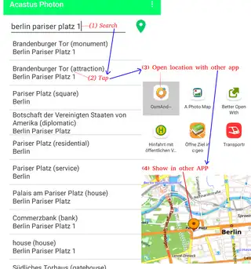

✉➡🌍 Acastus-Photon
خرائط وسفر
Acastus-Photon translates name of street/city/point-of-interest to geo-coordinate which can be opened in a map or navigation app such as OsmAnd, Maps.me, APhotoManager. shared with other people via the send command. You can start Acastus by clicking on an addresss in the Android Contacts app (Simple
✓ ترخيص مفتوح (LGPL-3.0-only) · آخر تحديث: 2023-09-25
1.28الإصدار
22.8 MBالحجم
LGPL-3.0-onlyالرخصة
Open in Kanzتحميل APK (22.8 MB)
Download APK
SHA-256: ece8e98b420feadc4265abb9558c14c944a1580794490e462d6e6cf205a4eeb4


امسح الكود لفتح صفحة التطبيق
Scan to open this app page
لو كنز مش متثبت عندك: نزّل متجر كنز.
Not installed? Get the Kanz store.